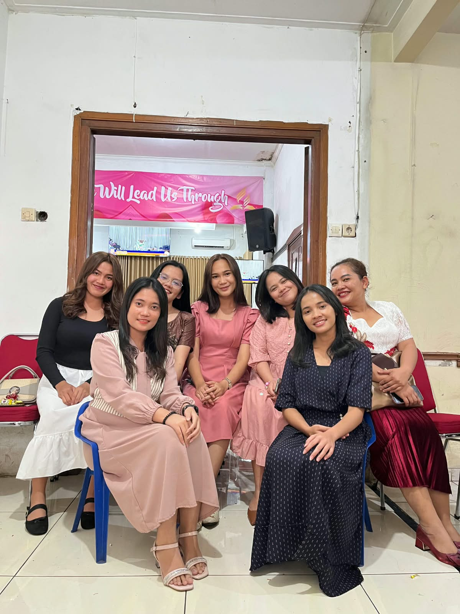
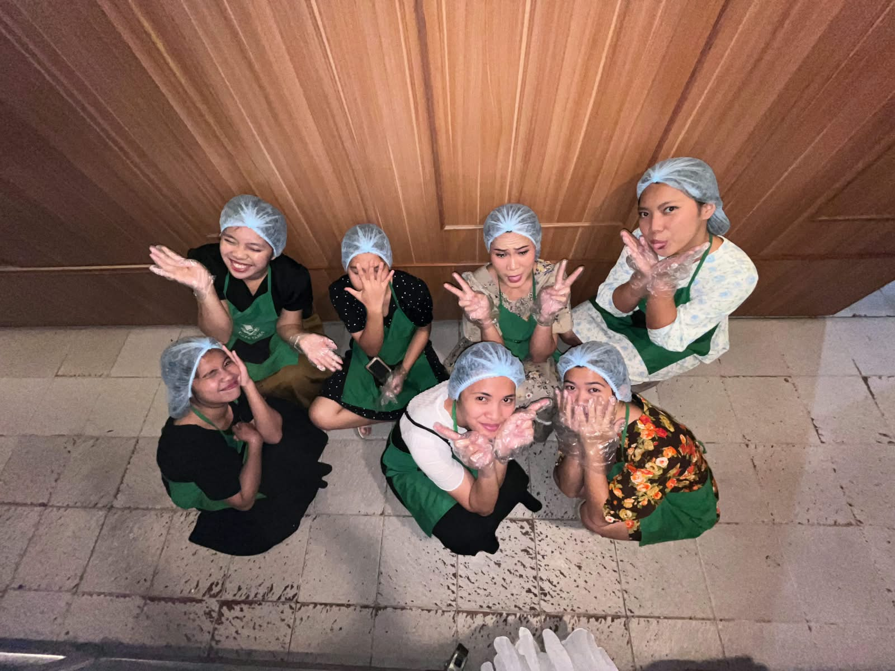
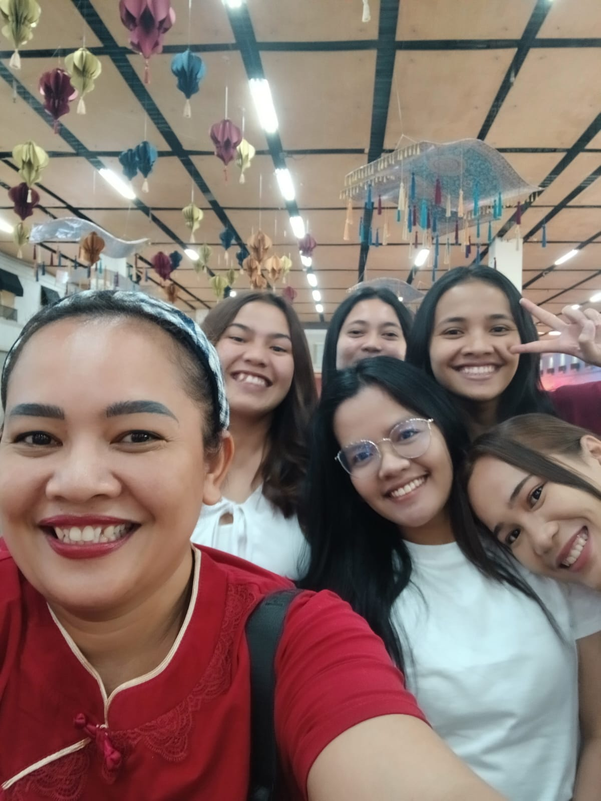
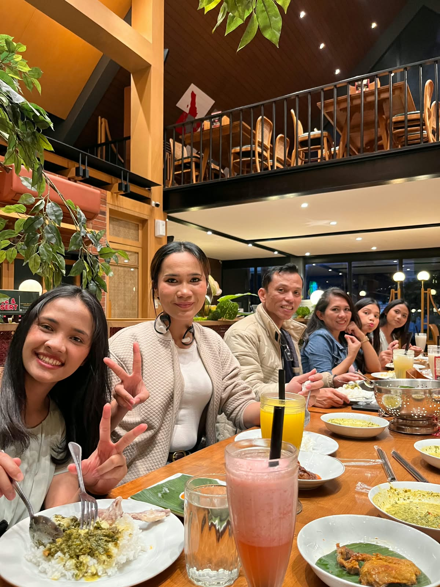
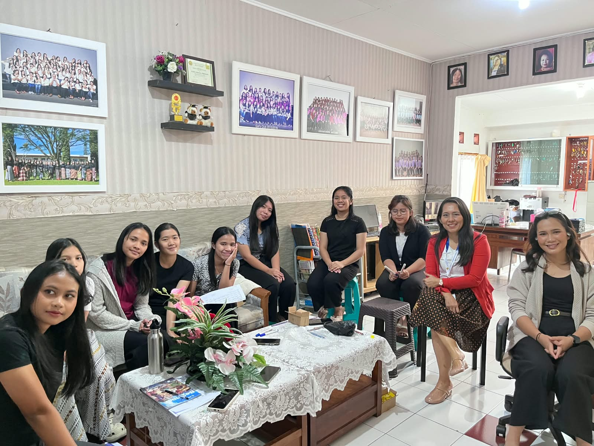
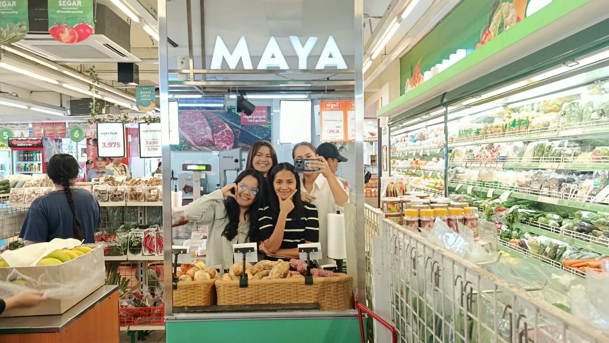
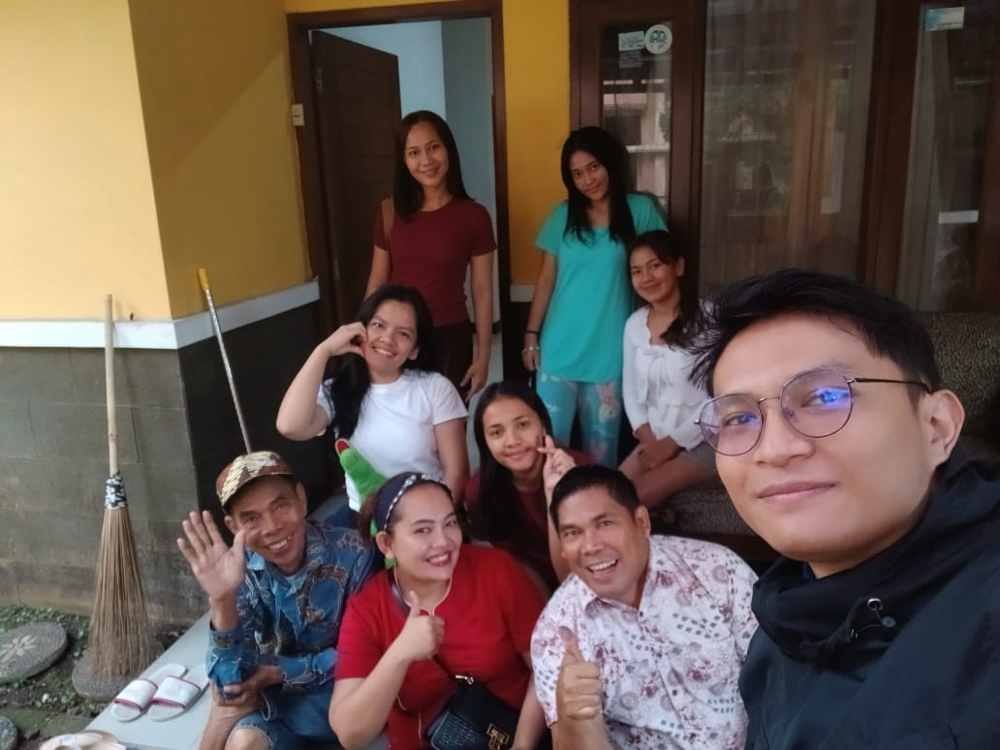

Pengantar Liburan
Libur kuliah kali ini saya habiskan di asrama UNAI bersama teman-teman. Selain bekerja, saya tetap menyempatkan diri beribadah, makan bersama, dan jalan-jalan sebentar. Berikut beberapa momen yang paling berkesan.
Galeri Liburan







Nama: Asi Jelita Tamba
NIM: 2582002
Pengalaman Menyenangkan Selama Libur Kuliah
Tautan:
FTI UNAI
Media Sosial Saya
Cerita Liburan Saya
Setelah menyelesaikan kegiatan perkuliahan dan ujian semester, saya akhirnya mendapatkan kesempatan untuk menikmati libur kuliah. Selama liburan, saya lebih banyak menghabiskan waktu bersama teman teman di asrama. Saya selama liburan bekerja diasrama unai. Selain itu, saya juga menggunakan waktu luang untuk beristirahat setelah menjalani kegiatan kuliah yang cukup padat. Saya menonton film, mendengarkan musik, dan bermain dengan teman-teman. Beberapa kali saya juga keluar asrama untuk menikmati suasana yang berbeda. Liburan ini memang sederhana, tetapi saya merasa sangat sedikit lelah karena saya kembali bekerja,dan sedikit waktu untuk beristirahat, dan saya tidak dapat melakukan berbagai kegiatan yang saya sukai.
Salah satu hal yang paling berkesan selama liburan adalah ketika saya dapat menghabiskan waktu bersama teman-teman di asrama. Kami berbincang, tertawa, makan bersama, dan melakukan berbagai kegiatan sederhana. Saya merasa senang karena untuk sementara dapat melupakan tugas kuliah dan jadwal perkuliahan yang padat. Liburan juga mengajarkan saya bahwa waktu istirahat sangat penting untuk menjaga semangat dan kesehatan.Walaupun saya tetap bekerja dan bukan beristirahat,saya merasa sangat kesulitan untuk punya waktu dengan diri saya sendiri.Saya juga merasa badan saya sangat membutuhkan istirahat yang cukup,sampai saya mudah terkena penyakit seperti flu dan batuk.Tapi semua hal yang saya jalanin membuat saya tetap bersyukur dalam hal apapun yang saya lakukan dan saya mempunyai pengalaman bekerja di asrama.
Liburan ini memberikan saya banyak pengalaman yang berharga.
Saya sangat menikmati waktu bersama teman-teman diasrama .